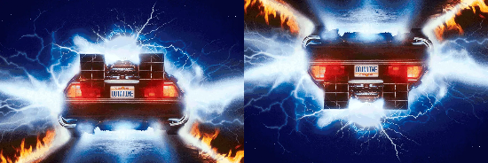
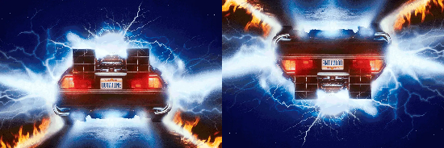
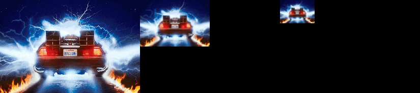

kornia.geometry.transform¶
The functions in this section perform various geometrical transformations of 2D images.
Warp operators¶
- kornia.geometry.transform.warp_perspective(src, M, dsize, mode='bilinear', padding_mode='zeros', align_corners=True, fill_value=None)¶
Apply a perspective transformation to an image.
The function warp_perspective transforms the source image using the specified matrix:
\[\text{dst} (x, y) = \text{src} \left( \frac{M^{-1}_{11} x + M^{-1}_{12} y + M^{-1}_{13}}{M^{-1}_{31} x + M^{-1}_{32} y + M^{-1}_{33}} , \frac{M^{-1}_{21} x + M^{-1}_{22} y + M^{-1}_{23}}{M^{-1}_{31} x + M^{-1}_{32} y + M^{-1}_{33}} \right )\]- Parameters:
src (
Tensor) – input image with shape \((B, C, H, W)\).M (
Tensor) – transformation matrix with shape \((B, 3, 3)\).dsize (
tuple[int,int]) – size of the output image (height, width).mode (
str, optional) – interpolation mode to calculate output values'bilinear'|'nearest'. Default:"bilinear"padding_mode (
str, optional) – padding mode for outside grid values'zeros'|'border'|'reflection'|'fill'. Default:"zeros"align_corners (
bool, optional) – interpolation flag. Default:Truefill_value (
Optional[Tensor], optional) – tensor of shape \((3)\) that fills the padding area. Only supported for RGB. Default:None
- Return type:
- Returns:
the warped input image \((B, C, H, W)\).
Example
>>> img = torch.rand(1, 4, 5, 6) >>> H = torch.eye(3)[None] >>> out = warp_perspective(img, H, (4, 2), align_corners=True) >>> print(out.shape) torch.Size([1, 4, 4, 2])
Note
This function is often used in conjunction with
get_perspective_transform().Note
See a working example here.
- kornia.geometry.transform.warp_perspective3d(src, M, dsize, flags='bilinear', border_mode='zeros', align_corners=False)¶
Apply a perspective transformation to an image.
The function warp_perspective transforms the source image using the specified matrix:
\[\text{dst} (x, y) = \text{src} \left( \frac{M_{11} x + M_{12} y + M_{13}}{M_{31} x + M_{32} y + M_{33}} , \frac{M_{21} x + M_{22} y + M_{23}}{M_{31} x + M_{32} y + M_{33}} \right )\]- Parameters:
src (
Tensor) – input image with shape \((B, C, D, H, W)\).M (
Tensor) – transformation matrix with shape \((B, 4, 4)\).dsize (
tuple[int,int,int]) – size of the output image (height, width).flags (
str, optional) – interpolation mode to calculate output values'bilinear'|'nearest'. Default:"bilinear"border_mode (
str, optional) – padding mode for outside grid values'zeros'|'border'|'reflection'. Default:"zeros"align_corners (
bool, optional) – interpolation flag. Default:False
- Return type:
- Returns:
the warped input image \((B, C, D, H, W)\).
Note
This function is often used in conjunction with
get_perspective_transform3d().
- kornia.geometry.transform.warp_affine(src, M, dsize, mode='bilinear', padding_mode='zeros', align_corners=True, fill_value=None)¶
Apply an affine transformation to a tensor.
The function warp_affine transforms the source tensor using the specified matrix:
\[\text{dst}(x, y) = \text{src} \left( M_{11} x + M_{12} y + M_{13} , M_{21} x + M_{22} y + M_{23} \right )\]- Parameters:
src (
Tensor) – input tensor of shape \((B, C, H, W)\).M (
Tensor) – affine transformation of shape \((B, 2, 3)\).dsize (
tuple[int,int]) – size of the output image (height, width).mode (
str, optional) – interpolation mode to calculate output values'bilinear'|'nearest'. Default:"bilinear"padding_mode (
str, optional) – padding mode for outside grid values'zeros'|'border'|'reflection'|'fill'. Default:"zeros"align_corners (
bool, optional) – mode for grid_generation. Default:Truefill_value (
Optional[Tensor], optional) – tensor of shape \((3)\) that fills the padding area. Only supported for RGB. Default:None
- Return type:
- Returns:
the warped tensor with shape \((B, C, H, W)\).
Note
This function is often used in conjunction with
get_rotation_matrix2d(),get_shear_matrix2d(),get_affine_matrix2d(),invert_affine_transform().Note
See a working example here.
Example
>>> img = torch.rand(1, 4, 5, 6) >>> A = torch.eye(2, 3)[None] >>> out = warp_affine(img, A, (4, 2), align_corners=True) >>> print(out.shape) torch.Size([1, 4, 4, 2])
- kornia.geometry.transform.warp_affine3d(src, M, dsize, flags='bilinear', padding_mode='zeros', align_corners=True)¶
Apply a projective transformation a to 3d tensor.
Warning
This API signature it is experimental and might suffer some changes in the future.
- Parameters:
src (
Tensor) – input tensor of shape \((B, C, D, H, W)\).M (
Tensor) – projective transformation matrix of shape \((B, 3, 4)\).dsize (
tuple[int,int,int]) – size of the output image (depth, height, width).flags (
str, optional) – interpolation mode to calculate output values'bilinear'|'nearest'. Default:"bilinear"padding_mode (
str, optional) – padding mode for outside grid values'zeros'|'border'|'reflection'. Default:"zeros"align_corners (
bool, optional) – mode for grid_generation. Default:True
- Returns:
the warped 3d tensor with shape \((B, C, D, H, W)\).
- Return type:
Tensor
Note
This function is often used in conjunction with
get_perspective_transform3d().
- kornia.geometry.transform.warp_image_tps(image, kernel_centers, kernel_weights, affine_weights, align_corners=False, padding_mode='zeros')¶
Warp an image tensor according to the thin plate spline transform defined by arguments.
The transform is applied to each pixel coordinate in the output image to obtain a point in the input image for interpolation of the output pixel. So the TPS parameters should correspond to a warp from output space to input space.
The input image is a \((B, C, H, W)\) tensor. The kernel centers, kernel weight and affine weights are the same as in warp_points_tps.
- Parameters:
image (
Tensor) – input image tensor \((B, C, H, W)\).kernel_centers (
Tensor) – kernel center points \((B, K, 2)\).kernel_weights (
Tensor) – tensor of kernl weights \((B, K, 2)\).affine_weights (
Tensor) – tensor of affine weights \((B, 3, 2)\).align_corners (
bool, optional) – interpolation flag used by grid_sample. Default:Falsepadding_mode (
str, optional) – padding flag used by grid_sample. Default:"zeros"
- Return type:
- Returns:
warped image tensor \((B, C, H, W)\).
Example
>>> points_src = torch.rand(1, 5, 2) >>> points_dst = torch.rand(1, 5, 2) >>> image = torch.rand(1, 3, 32, 32) >>> # note that we are getting the reverse transform: dst -> src >>> kernel_weights, affine_weights = get_tps_transform(points_dst, points_src) >>> warped_image = warp_image_tps(image, points_src, kernel_weights, affine_weights)
Note
This function is often used in conjunction with
get_tps_transform().
- kornia.geometry.transform.warp_points_tps(points_src, kernel_centers, kernel_weights, affine_weights)¶
Warp a tensor of coordinate points using the thin plate spline defined by arguments.
The source points should be a \((B, N, 2)\) tensor of \((x, y)\) coordinates. The kernel centers are a \((B, K, 2)\) tensor of \((x, y)\) coordinates. The kernel weights are a \((B, K, 2)\) tensor, and the affine weights are a \((B, 3, 2)\) tensor. For the weight tensors, tensor[…, 0] contains the weights for the x-transform and tensor[…, 1] the weights for the y-transform.
- Parameters:
- Return type:
- Returns:
The \((B, N, 2)\) tensor of warped source points, from applying the TPS transform.
Example
>>> points_src = torch.rand(1, 5, 2) >>> points_dst = torch.rand(1, 5, 2) >>> kernel_weights, affine_weights = get_tps_transform(points_src, points_dst) >>> warped = warp_points_tps(points_src, points_dst, kernel_weights, affine_weights) >>> warped_correct = torch.allclose(warped, points_dst)
Note
This function is often used in conjunction with
get_tps_transform().
- kornia.geometry.transform.warp_grid(grid, src_homo_dst)¶
Compute the grid to warp the coordinates grid by the homography/ies.
- Parameters:
- Return type:
- Returns:
the transformed grid of shape \((N, H, W, 2)\).
- kornia.geometry.transform.warp_grid3d(grid, src_homo_dst)¶
Compute the grid to warp the coordinates grid by the homography/ies.
- Parameters:
- Return type:
- Returns:
the transformed grid of shape \((N, H, W, 3)\).
- kornia.geometry.transform.remap(image, map_x, map_y, mode='bilinear', padding_mode='zeros', align_corners=None, normalized_coordinates=False)¶
Apply a generic geometrical transformation to an image tensor.
The function remap transforms the source tensor using the specified map:
\[\text{dst}(x, y) = \text{src}(map_x(x, y), map_y(x, y))\]- Parameters:
image (
Tensor) – the tensor to remap with shape (B, C, H, W). Where C is the number of channels.map_x (
Tensor) – the flow in the x-direction in pixel coordinates. The tensor must be in the shape of (B, H, W).map_y (
Tensor) – the flow in the y-direction in pixel coordinates. The tensor must be in the shape of (B, H, W).mode (
str, optional) – interpolation mode to calculate output values'bilinear'|'nearest'. Default:"bilinear"padding_mode (
str, optional) – padding mode for outside grid values'zeros'|'border'|'reflection'. Default:"zeros"align_corners (
Optional[bool], optional) – mode for grid_generation. Default:Nonenormalized_coordinates (
bool, optional) – whether the input coordinates are normalized in the range of [-1, 1]. Default:False
- Return type:
- Returns:
the warped tensor with same shape as the input grid maps.
Example
>>> import torch >>> from kornia.utils import create_meshgrid >>> grid = create_meshgrid(2, 2, False) # 1x2x2x2 >>> grid += 1 # apply offset in both directions >>> input = torch.ones(1, 1, 2, 2) >>> remap(input, grid[..., 0], grid[..., 1], align_corners=True) # 1x1x2x2 tensor([[[[1., 0.], [0., 0.]]]])
Note
This function is often used in conjunction with
kornia.utils.create_meshgrid().
Image 2d transforms¶
- kornia.geometry.transform.affine(tensor, matrix, mode='bilinear', padding_mode='zeros', align_corners=True)¶
Apply an affine transformation to the image.
- Parameters:
tensor (
Tensor) – The image tensor to be warped in shapes of \((H, W)\), \((D, H, W)\) and \((B, C, H, W)\).matrix (
Tensor) – The 2x3 affine transformation matrix.mode (
str, optional) – interpolation mode to calculate output values'bilinear'|'nearest'. Default:"bilinear"padding_mode (
str, optional) – padding mode for outside grid values'zeros'|'border'|'reflection'. Default:"zeros"align_corners (
bool, optional) – interpolation flag. Default:True
- Return type:
- Returns:
The warped image with the same shape as the input.
Example
>>> img = torch.rand(1, 2, 3, 5) >>> aff = torch.eye(2, 3)[None] >>> out = affine(img, aff) >>> print(out.shape) torch.Size([1, 2, 3, 5])
- kornia.geometry.transform.rotate(tensor, angle, center=None, mode='bilinear', padding_mode='zeros', align_corners=True)¶
Rotate the tensor anti-clockwise about the center.
- Parameters:
tensor (
Tensor) – The image tensor to be warped in shapes of \((B, C, H, W)\).angle (
Tensor) – The angle through which to rotate. The tensor must have a shape of (B), where B is batch size.center (
Optional[Tensor], optional) – The center through which to rotate. The tensor must have a shape of (B, 2), where B is batch size and last dimension contains cx and cy. Default:Nonemode (
str, optional) – interpolation mode to calculate output values'bilinear'|'nearest'. Default:"bilinear"padding_mode (
str, optional) – padding mode for outside grid values'zeros'|'border'|'reflection'. Default:"zeros"align_corners (
bool, optional) – interpolation flag. Default:True
- Return type:
- Returns:
The rotated tensor with shape as input.
Note
See a working example here.
Example
>>> img = torch.rand(1, 3, 4, 4) >>> angle = torch.tensor([90.]) >>> out = rotate(img, angle) >>> print(out.shape) torch.Size([1, 3, 4, 4])
- kornia.geometry.transform.translate(tensor, translation, mode='bilinear', padding_mode='zeros', align_corners=True)¶
Translate the tensor in pixel units.
- Parameters:
tensor (
Tensor) – The image tensor to be warped in shapes of \((B, C, H, W)\).translation (
Tensor) – tensor containing the amount of pixels to translate in the x and y direction. The tensor must have a shape of (B, 2), where B is batch size, last dimension contains dx dy.mode (
str, optional) – interpolation mode to calculate output values'bilinear'|'nearest'. Default:"bilinear"padding_mode (
str, optional) – padding mode for outside grid values'zeros'|'border'|'reflection'. Default:"zeros"align_corners (
bool, optional) – interpolation flag. Default:True
- Return type:
- Returns:
The translated tensor with shape as input.
Example
>>> img = torch.rand(1, 3, 4, 4) >>> translation = torch.tensor([[1., 0.]]) >>> out = translate(img, translation) >>> print(out.shape) torch.Size([1, 3, 4, 4])
- kornia.geometry.transform.scale(tensor, scale_factor, center=None, mode='bilinear', padding_mode='zeros', align_corners=True)¶
Scale the tensor by a factor.
- Parameters:
tensor (
Tensor) – The image tensor to be warped in shapes of \((B, C, H, W)\).scale_factor (
Tensor) – The scale factor apply. The tensor must have a shape of (B) or (B, 2), where B is batch size. If (B), isotropic scaling will perform. If (B, 2), x-y-direction specific scaling will perform.center (
Optional[Tensor], optional) – The center through which to scale. The tensor must have a shape of (B, 2), where B is batch size and last dimension contains cx and cy. Default:Nonemode (
str, optional) – interpolation mode to calculate output values'bilinear'|'nearest'. Default:"bilinear"padding_mode (
str, optional) – padding mode for outside grid values'zeros'|'border'|'reflection'. Default:"zeros"align_corners (
bool, optional) – interpolation flag. Default:True
- Return type:
- Returns:
The scaled tensor with the same shape as the input.
Example
>>> img = torch.rand(1, 3, 4, 4) >>> scale_factor = torch.tensor([[2., 2.]]) >>> out = scale(img, scale_factor) >>> print(out.shape) torch.Size([1, 3, 4, 4])
- kornia.geometry.transform.shear(tensor, shear, mode='bilinear', padding_mode='zeros', align_corners=False)¶
Shear the tensor.
- Parameters:
tensor (
Tensor) – The image tensor to be skewed with shape of \((B, C, H, W)\).shear (
Tensor) – tensor containing the angle to shear in the x and y direction. The tensor must have a shape of (B, 2), where B is batch size, last dimension contains shx shy.mode (
str, optional) – interpolation mode to calculate output values'bilinear'|'nearest'. Default:"bilinear"padding_mode (
str, optional) – padding mode for outside grid values'zeros'|'border'|'reflection'. Default:"zeros"align_corners (
bool, optional) – interpolation flag. Default:False
- Return type:
- Returns:
The skewed tensor with shape same as the input.
Example
>>> img = torch.rand(1, 3, 4, 4) >>> shear_factor = torch.tensor([[0.5, 0.0]]) >>> out = shear(img, shear_factor) >>> print(out.shape) torch.Size([1, 3, 4, 4])
- kornia.geometry.transform.hflip(input)¶
Horizontally flip a tensor image or a batch of tensor images.
Input must be a tensor of shape (C, H, W) or a batch of tensors \((*, C, H, W)\).
- kornia.geometry.transform.vflip(input)¶
Vertically flip a tensor image or a batch of tensor images.
Input must be a tensor of shape (C, H, W) or a batch of tensors \((*, C, H, W)\).
- kornia.geometry.transform.rot180(input)¶
Rotate a tensor image or a batch of tensor images 180 degrees.
Input must be a tensor of shape (C, H, W) or a batch of tensors \((*, C, H, W)\).
- kornia.geometry.transform.resize(input, size, interpolation='bilinear', align_corners=None, side='short', antialias=False)¶
Resize the input Tensor to the given size.

- Parameters:
input (
Tensor) – The image tensor to be skewed with shape of \((..., H, W)\). … means there can be any number of dimensions.size (
Union[int,Tuple[int,int]]) – Desired output size. If size is a sequence like (h, w), output size will be matched to this. If size is an int, smaller edge of the image will be matched to this number. i.e, if height > width, then image will be rescaled to (size * height / width, size)interpolation (
str, optional) – algorithm used for upsampling:'nearest'|'linear'|'bilinear'| ‘bicubic’ | ‘trilinear’ | ‘area’. Default:'bilinear'align_corners (
Optional[bool], optional) – interpolation flag. Default:Noneside (
str, optional) – Corresponding side ifsizeis an integer. Can be one of'short','long','vert', or'horz'. Default:'short'antialias (
bool, optional) – if True, then image will be filtered with Gaussian before downscaling. No effect for upscaling. Default:False
- Return type:
- Returns:
The resized tensor with the shape as the specified size.
Example
>>> img = torch.rand(1, 3, 4, 4) >>> out = resize(img, (6, 8)) >>> print(out.shape) torch.Size([1, 3, 6, 8])
- kornia.geometry.transform.rescale(input, factor, interpolation='bilinear', align_corners=None, antialias=False)¶
Rescale the input Tensor with the given factor.
- Parameters:
input (
Tensor) – The image tensor to be scale with shape of \((B, C, H, W)\).factor (
Union[float,Tuple[float,float]]) – Desired scaling factor in each direction. If scalar, the value is used for both the x- and y-direction.interpolation (
str, optional) – algorithm used for upsampling:'nearest'|'linear'|'bilinear'|'bicubic'|'trilinear'|'area'. Default:"bilinear"align_corners (
Optional[bool], optional) – interpolation flag. Default:Noneside – Corresponding side if
sizeis an integer. Can be one of'short','long','vert', or'horz'.antialias (
bool, optional) – if True, then image will be filtered with Gaussian before downscaling. No effect for upscaling. Default:False
- Return type:
- Returns:
The rescaled tensor with the shape as the specified size.
Example
>>> img = torch.rand(1, 3, 4, 4) >>> out = rescale(img, (2, 3)) >>> print(out.shape) torch.Size([1, 3, 8, 12])
- kornia.geometry.transform.elastic_transform2d(image, noise, kernel_size=(63, 63), sigma=(32.0, 32.0), alpha=(1.0, 1.0), align_corners=False, mode='bilinear', padding_mode='zeros')¶
Apply elastic transform of images as described in [SSP03].
- Parameters:
image (
Tensor) – Input image to be transformed with shape \((B, C, H, W)\).noise (
Tensor) – Noise image used to spatially transform the input image. Same resolution as the input image with shape \((B, 2, H, W)\). The coordinates order it is expected to be in x-y.kernel_size (
Tuple[int,int], optional) – the size of the Gaussian kernel. Default:(63, 63)sigma (
Union[Tuple[float,float],Tensor], optional) – The standard deviation of the Gaussian in the y and x directions, respectively. Larger sigma results in smaller pixel displacements. Default:(32.0, 32.0)alpha (
Union[Tuple[float,float],Tensor], optional) – The scaling factor that controls the intensity of the deformation in the y and x directions, respectively. Default:(1.0, 1.0)align_corners (
bool, optional) – Interpolation flag used by`grid_sample`. Default:Falsemode (
str, optional) – Interpolation mode used by`grid_sample`. Either'bilinear'or'nearest'. Default:"bilinear"padding_mode (
str, optional) – The padding used by`grid_sample`. Either'zeros','border'or'refection'. Default:"zeros"
- Return type:
- Returns:
the elastically transformed input image with shape \((B,C,H,W)\).
Example
>>> image = torch.rand(1, 3, 5, 5) >>> noise = torch.rand(1, 2, 5, 5, requires_grad=True) >>> image_hat = elastic_transform2d(image, noise, (3, 3)) >>> image_hat.mean().backward()
>>> image = torch.rand(1, 3, 5, 5) >>> noise = torch.rand(1, 2, 5, 5) >>> sigma = torch.tensor([4., 4.], requires_grad=True) >>> image_hat = elastic_transform2d(image, noise, (3, 3), sigma) >>> image_hat.mean().backward()
>>> image = torch.rand(1, 3, 5, 5) >>> noise = torch.rand(1, 2, 5, 5) >>> alpha = torch.tensor([16., 32.], requires_grad=True) >>> image_hat = elastic_transform2d(image, noise, (3, 3), alpha=alpha) >>> image_hat.mean().backward()
- kornia.geometry.transform.pyrdown(input, border_type='reflect', align_corners=False, factor=2.0)¶
Blur a tensor and downsamples it.
- Parameters:
input (
Tensor) – the tensor to be downsampled.border_type (
str, optional) – the padding mode to be applied before convolving. The expected modes are:'constant','reflect','replicate'or'circular'. Default:"reflect"align_corners (
bool, optional) – interpolation flag. Default:Falsefactor (
float, optional) – the downsampling factor Default:2.0
- Return type:
- Returns:
the downsampled tensor.
Examples
>>> input = torch.arange(16, dtype=torch.float32).reshape(1, 1, 4, 4) >>> pyrdown(input, align_corners=True) tensor([[[[ 3.7500, 5.2500], [ 9.7500, 11.2500]]]])
- kornia.geometry.transform.pyrup(input, border_type='reflect', align_corners=False)¶
Upsample a tensor and then blurs it.
- Parameters:
- Return type:
- Returns:
the downsampled tensor.
Examples
>>> input = torch.arange(4, dtype=torch.float32).reshape(1, 1, 2, 2) >>> pyrup(input, align_corners=True) tensor([[[[0.7500, 0.8750, 1.1250, 1.2500], [1.0000, 1.1250, 1.3750, 1.5000], [1.5000, 1.6250, 1.8750, 2.0000], [1.7500, 1.8750, 2.1250, 2.2500]]]])
- kornia.geometry.transform.build_pyramid(input, max_level, border_type='reflect', align_corners=False)¶
Construct the Gaussian pyramid for a tensor image.
The function constructs a vector of images and builds the Gaussian pyramid by recursively applying pyrDown to the previously built pyramid layers.
- Parameters:
input (
Tensor) – the tensor to be used to construct the pyramid.max_level (
int) – 0-based index of the last (the smallest) pyramid layer. It must be non-negative.border_type (
str, optional) – the padding mode to be applied before convolving. The expected modes are:'constant','reflect','replicate'or'circular'. Default:"reflect"align_corners (
bool, optional) – interpolation flag. Default:False
- Return type:
- Shape:
Input: \((B, C, H, W)\)
Output \([(B, C, H, W), (B, C, H/2, W/2), ...]\)
- kornia.geometry.transform.build_laplacian_pyramid(input, max_level, border_type='reflect', align_corners=False)¶
Construct the Laplacian pyramid for a tensor image.
The function constructs a vector of images and builds the Laplacian pyramid by recursively computing the difference after applying pyrUp to the adjacent layer in its Gaussian pyramid.
See [BA87] for more details.
- Parameters:
input (
Tensor) – the tensor to be used to construct the pyramid with shape \((B, C, H, W)\).max_level (
int) – 0-based index of the last (the smallest) pyramid layer. It must be non-negative.border_type (
str, optional) – the padding mode to be applied before convolving. The expected modes are:'constant','reflect','replicate'or'circular'. Default:"reflect"align_corners (
bool, optional) – interpolation flag. Default:False
- Returns:
\([(B, C, H, W), (B, C, H/2, W/2), ...]\)
- Return type:
Output
Matrix transformations¶
- kornia.geometry.transform.get_perspective_transform(points_src, points_dst)¶
Calculate a perspective transform from four pairs of the corresponding points.
The algorithm is a vanilla implementation of the Direct Linear transform (DLT). See more: https://www.cs.cmu.edu/~16385/s17/Slides/10.2_2D_Alignment__DLT.pdf
The function calculates the matrix of a perspective transform that maps from the source to destination points:
\[\begin{split}\begin{bmatrix} x^{'} \\ y^{'} \\ 1 \\ \end{bmatrix} = \begin{bmatrix} h_1 & h_2 & h_3 \\ h_4 & h_5 & h_6 \\ h_7 & h_8 & h_9 \\ \end{bmatrix} \cdot \begin{bmatrix} x \\ y \\ 1 \\ \end{bmatrix}\end{split}\]- Parameters:
- Return type:
- Returns:
the perspective transformation with shape \((B, 3, 3)\).
Note
This function is often used in conjunction with
warp_perspective().Example
>>> x1 = torch.tensor([[[0., 0.], [1., 0.], [1., 1.], [0., 1.]]]) >>> x2 = torch.tensor([[[1., 0.], [0., 0.], [0., 1.], [1., 1.]]]) >>> x2_trans_x1 = get_perspective_transform(x1, x2)
- kornia.geometry.transform.get_perspective_transform3d(src, dst)¶
Calculate a 3d perspective transform from four pairs of the corresponding points.
The function calculates the matrix of a perspective transform so that:
\[\begin{split}\begin{bmatrix} t_{i}x_{i}^{'} \\ t_{i}y_{i}^{'} \\ t_{i}z_{i}^{'} \\ t_{i} \\ \end{bmatrix} = \textbf{map_matrix} \cdot \begin{bmatrix} x_{i} \\ y_{i} \\ z_{i} \\ 1 \\ \end{bmatrix}\end{split}\]where
\[dst(i) = (x_{i}^{'},y_{i}^{'},z_{i}^{'}), src(i) = (x_{i}, y_{i}, z_{i}), i = 0,1,2,5,7\]Concrete math is as below:
\[\[ u_i =\frac{c_{00} * x_i + c_{01} * y_i + c_{02} * z_i + c_{03}} {c_{30} * x_i + c_{31} * y_i + c_{32} * z_i + c_{33}} \] \[ v_i =\frac{c_{10} * x_i + c_{11} * y_i + c_{12} * z_i + c_{13}} {c_{30} * x_i + c_{31} * y_i + c_{32} * z_i + c_{33}} \] \[ w_i =\frac{c_{20} * x_i + c_{21} * y_i + c_{22} * z_i + c_{23}} {c_{30} * x_i + c_{31} * y_i + c_{32} * z_i + c_{33}} \]\]\[\begin{split}\begin{pmatrix} x_0 & y_0 & z_0 & 1 & 0 & 0 & 0 & 0 & 0 & 0 & 0 & 0 & -x_0*u_0 & -y_0*u_0 & -z_0 * u_0 \\ x_1 & y_1 & z_1 & 1 & 0 & 0 & 0 & 0 & 0 & 0 & 0 & 0 & -x_1*u_1 & -y_1*u_1 & -z_1 * u_1 \\ x_2 & y_2 & z_2 & 1 & 0 & 0 & 0 & 0 & 0 & 0 & 0 & 0 & -x_2*u_2 & -y_2*u_2 & -z_2 * u_2 \\ x_5 & y_5 & z_5 & 1 & 0 & 0 & 0 & 0 & 0 & 0 & 0 & 0 & -x_5*u_5 & -y_5*u_5 & -z_5 * u_5 \\ x_7 & y_7 & z_7 & 1 & 0 & 0 & 0 & 0 & 0 & 0 & 0 & 0 & -x_7*u_7 & -y_7*u_7 & -z_7 * u_7 \\ 0 & 0 & 0 & 0 & x_0 & y_0 & z_0 & 1 & 0 & 0 & 0 & 0 & -x_0*v_0 & -y_0*v_0 & -z_0 * v_0 \\ 0 & 0 & 0 & 0 & x_1 & y_1 & z_1 & 1 & 0 & 0 & 0 & 0 & -x_1*v_1 & -y_1*v_1 & -z_1 * v_1 \\ 0 & 0 & 0 & 0 & x_2 & y_2 & z_2 & 1 & 0 & 0 & 0 & 0 & -x_2*v_2 & -y_2*v_2 & -z_2 * v_2 \\ 0 & 0 & 0 & 0 & x_5 & y_5 & z_5 & 1 & 0 & 0 & 0 & 0 & -x_5*v_5 & -y_5*v_5 & -z_5 * v_5 \\ 0 & 0 & 0 & 0 & x_7 & y_7 & z_7 & 1 & 0 & 0 & 0 & 0 & -x_7*v_7 & -y_7*v_7 & -z_7 * v_7 \\ 0 & 0 & 0 & 0 & 0 & 0 & 0 & 0 & x_0 & y_0 & z_0 & 1 & -x_0*w_0 & -y_0*w_0 & -z_0 * w_0 \\ 0 & 0 & 0 & 0 & 0 & 0 & 0 & 0 & x_1 & y_1 & z_1 & 1 & -x_1*w_1 & -y_1*w_1 & -z_1 * w_1 \\ 0 & 0 & 0 & 0 & 0 & 0 & 0 & 0 & x_2 & y_2 & z_2 & 1 & -x_2*w_2 & -y_2*w_2 & -z_2 * w_2 \\ 0 & 0 & 0 & 0 & 0 & 0 & 0 & 0 & x_5 & y_5 & z_5 & 1 & -x_5*w_5 & -y_5*w_5 & -z_5 * w_5 \\ 0 & 0 & 0 & 0 & 0 & 0 & 0 & 0 & x_7 & y_7 & z_7 & 1 & -x_7*w_7 & -y_7*w_7 & -z_7 * w_7 \\ \end{pmatrix}\end{split}\]- Parameters:
- Return type:
- Returns:
the perspective transformation with shape \((B, 4, 4)\).
Note
This function is often used in conjunction with
warp_perspective3d().
- kornia.geometry.transform.get_projective_transform(center, angles, scales)¶
Calculate the projection matrix for a 3D rotation.
Warning
This API signature it is experimental and might suffer some changes in the future.
The function computes the projection matrix given the center and angles per axis.
- Parameters:
center (
Tensor) – center of the rotation (x,y,z) in the source with shape \((B, 3)\).angles (
Tensor) – axis angle vector containing the rotation angles in degrees in the form of (rx, ry, rz) with shape \((B, 3)\). Internally it calls Rodrigues to compute the rotation matrix from axis-angle.scales (
Tensor) – scale factor for x-y-z-directions with shape \((B, 3)\).
- Return type:
- Returns:
the projection matrix of 3D rotation with shape \((B, 3, 4)\).
Note
This function is often used in conjunction with
warp_affine3d().
- kornia.geometry.transform.get_rotation_matrix2d(center, angle, scale)¶
Calculate an affine matrix of 2D rotation.
The function calculates the following matrix:
\[\begin{split}\begin{bmatrix} \alpha & \beta & (1 - \alpha) \cdot \text{x} - \beta \cdot \text{y} \\ -\beta & \alpha & \beta \cdot \text{x} + (1 - \alpha) \cdot \text{y} \end{bmatrix}\end{split}\]where
\[\begin{split}\alpha = \text{scale} \cdot cos(\text{angle}) \\ \beta = \text{scale} \cdot sin(\text{angle})\end{split}\]The transformation maps the rotation center to itself If this is not the target, adjust the shift.
- Parameters:
center (
Tensor) – center of the rotation in the source image with shape \((B, 2)\).angle (
Tensor) – rotation angle in degrees. Positive values mean counter-clockwise rotation (the coordinate origin is assumed to be the top-left corner) with shape \((B)\).scale (
Tensor) – scale factor for x, y scaling with shape \((B, 2)\).
- Return type:
- Returns:
the affine matrix of 2D rotation with shape \((B, 2, 3)\).
Example
>>> center = zeros(1, 2) >>> scale = torch.ones((1, 2)) >>> angle = 45. * torch.ones(1) >>> get_rotation_matrix2d(center, angle, scale) tensor([[[ 0.7071, 0.7071, 0.0000], [-0.7071, 0.7071, 0.0000]]])
Note
This function is often used in conjunction with
warp_affine().
- kornia.geometry.transform.get_shear_matrix2d(center, sx=None, sy=None)¶
Compose shear matrix Bx4x4 from the components.
Note: Ordered shearing, shear x-axis then y-axis.
\[\begin{split}\begin{bmatrix} 1 & b \\ a & ab + 1 \\ \end{bmatrix}\end{split}\]- Parameters:
- Return type:
- Returns:
params to be passed to the affine transformation with shape \((B, 3, 3)\).
Examples
>>> rng = torch.manual_seed(0) >>> sx = torch.randn(1) >>> sx tensor([1.5410]) >>> center = torch.tensor([[0., 0.]]) # Bx2 >>> get_shear_matrix2d(center, sx=sx) tensor([[[ 1.0000, -33.5468, 0.0000], [ -0.0000, 1.0000, 0.0000], [ 0.0000, 0.0000, 1.0000]]])
Note
This function is often used in conjunction with
warp_affine(),warp_perspective().
- kornia.geometry.transform.get_shear_matrix3d(center, sxy=None, sxz=None, syx=None, syz=None, szx=None, szy=None)¶
Compose shear matrix Bx4x4 from the components.
Note: Ordered shearing, shear x-axis then y-axis then z-axis.
\[\begin{split}\begin{bmatrix} 1 & o & r & oy + rz \\ m & p & s & mx + py + sz -y \\ n & q & t & nx + qy + tz -z \\ 0 & 0 & 0 & 1 \\ \end{bmatrix} Where: m = S_{xy} n = S_{xz} o = S_{yx} p = S_{xy}S_{yx} + 1 q = S_{xz}S_{yx} + S_{yz} r = S_{zx} + S_{yx}S_{zy} s = S_{xy}S_{zx} + (S_{xy}S_{yx} + 1)S_{zy} t = S_{xz}S_{zx} + (S_{xz}S_{yx} + S_{yz})S_{zy} + 1\end{split}\]- Params:
center: shearing center coordinates of (x, y, z). sxy: shearing angle along x axis, towards y plane in radiants. sxz: shearing angle along x axis, towards z plane in radiants. syx: shearing angle along y axis, towards x plane in radiants. syz: shearing angle along y axis, towards z plane in radiants. szx: shearing angle along z axis, towards x plane in radiants. szy: shearing angle along z axis, towards y plane in radiants.
- Return type:
- Returns:
params to be passed to the affine transformation.
Examples
>>> rng = torch.manual_seed(0) >>> sxy, sxz, syx, syz = torch.randn(4, 1) >>> sxy, sxz, syx, syz (tensor([1.5410]), tensor([-0.2934]), tensor([-2.1788]), tensor([0.5684])) >>> center = torch.tensor([[0., 0., 0.]]) # Bx3 >>> get_shear_matrix3d(center, sxy=sxy, sxz=sxz, syx=syx, syz=syz) tensor([[[ 1.0000, -1.4369, 0.0000, 0.0000], [-33.5468, 49.2039, 0.0000, 0.0000], [ 0.3022, -1.0729, 1.0000, 0.0000], [ 0.0000, 0.0000, 0.0000, 1.0000]]])
Note
This function is often used in conjunction with
warp_perspective3d().
- kornia.geometry.transform.get_affine_matrix2d(translations, center, scale, angle, sx=None, sy=None)¶
Compose affine matrix from the components.
- Parameters:
translations (
Tensor) – tensor containing the translation vector with shape \((B, 2)\).center (
Tensor) – tensor containing the center vector with shape \((B, 2)\).scale (
Tensor) – tensor containing the scale factor with shape \((B, 2)\).angle (
Tensor) – tensor of angles in degrees \((B)\).sx (
Optional[Tensor], optional) – tensor containing the shear factor in the x-direction with shape \((B)\). Default:Nonesy (
Optional[Tensor], optional) – tensor containing the shear factor in the y-direction with shape \((B)\). Default:None
- Return type:
- Returns:
the affine transformation matrix \((B, 3, 3)\).
Note
This function is often used in conjunction with
warp_affine(),warp_perspective().
- kornia.geometry.transform.get_affine_matrix3d(translations, center, scale, angles, sxy=None, sxz=None, syx=None, syz=None, szx=None, szy=None)¶
Compose 3d affine matrix from the components.
- Parameters:
translations (
Tensor) – tensor containing the translation vector (dx,dy,dz) with shape \((B, 3)\).center (
Tensor) – tensor containing the center vector (x,y,z) with shape \((B, 3)\).scale (
Tensor) – tensor containing the scale factor with shape \((B)\).angles (
Tensor) – axis angle vector containing the rotation angles in degrees in the form of (rx, ry, rz) with shape \((B, 3)\). Internally it calls Rodrigues to compute the rotation matrix from axis-angle.sxy (
Optional[Tensor], optional) – tensor containing the shear factor in the xy-direction with shape \((B)\). Default:Nonesxz (
Optional[Tensor], optional) – tensor containing the shear factor in the xz-direction with shape \((B)\). Default:Nonesyx (
Optional[Tensor], optional) – tensor containing the shear factor in the yx-direction with shape \((B)\). Default:Nonesyz (
Optional[Tensor], optional) – tensor containing the shear factor in the yz-direction with shape \((B)\). Default:Noneszx (
Optional[Tensor], optional) – tensor containing the shear factor in the zx-direction with shape \((B)\). Default:Noneszy (
Optional[Tensor], optional) – tensor containing the shear factor in the zy-direction with shape \((B)\). Default:None
- Return type:
- Returns:
the 3d affine transformation matrix \((B, 3, 3)\).
Note
This function is often used in conjunction with
warp_perspective().
- kornia.geometry.transform.invert_affine_transform(matrix)¶
Invert an affine transformation.
The function computes an inverse affine transformation represented by 2x3 matrix:
\[\begin{split}\begin{bmatrix} a_{11} & a_{12} & b_{1} \\ a_{21} & a_{22} & b_{2} \\ \end{bmatrix}\end{split}\]The result is also a 2x3 matrix of the same type as M.
- Parameters:
matrix (
Tensor) – original affine transform. The tensor must be in the shape of \((B, 2, 3)\).- Return type:
- Returns:
the reverse affine transform with shape \((B, 2, 3)\).
Note
This function is often used in conjunction with
warp_affine().
- kornia.geometry.transform.projection_from_Rt(rmat, tvec)¶
Compute the projection matrix from Rotation and translation.
Warning
This API signature it is experimental and might suffer some changes in the future.
Concatenates the batch of rotations and translations such that \(P = [R | t]\).
- kornia.geometry.transform.get_tps_transform(points_src, points_dst)¶
Compute the TPS transform parameters that warp source points to target points.
The input to this function is a tensor of \((x, y)\) source points \((B, N, 2)\) and a corresponding tensor of target \((x, y)\) points \((B, N, 2)\).
- Parameters:
- Return type:
- Returns:
- \((B, N, 2)\) tensor of kernel weights and \((B, 3, 2)\)
tensor of affine weights. The last dimension contains the x-transform and y-transform weights as separate columns.
Example
>>> points_src = torch.rand(1, 5, 2) >>> points_dst = torch.rand(1, 5, 2) >>> kernel_weights, affine_weights = get_tps_transform(points_src, points_dst)
Note
This function is often used in conjunction with
warp_points_tps(),warp_image_tps().
Crop operators¶
- kornia.geometry.transform.crop_by_indices(input_tensor, src_box, size=None, interpolation='bilinear', align_corners=None, antialias=False, shape_compensation='resize')¶
Crop tensors with naive indices.
- Parameters:
input_tensor (
Tensor) – the 2D image tensor with shape (B, C, H, W).src_box (
Tensor) – a tensor with shape (B, 4, 2) containing the coordinates of the bounding boxes to be extracted. The tensor must have the shape of Bx4x2, where each box is defined in the clockwise order: top-left, top-right, bottom-right and bottom-left. The coordinates must be in x, y order.size (
Optional[Tuple[int,int]], optional) – output size. An auto resize or pad will be performed according toshape_compensationif the cropped slice sizes are not exactly align size. If None, will auto-infer from src_box. Default:Noneinterpolation (
str, optional) – algorithm used for upsampling:'nearest'|'linear'|'bilinear'| ‘bicubic’ | ‘trilinear’ | ‘area’. Default:"bilinear"align_corners (
Optional[bool], optional) – interpolation flag. Default:Noneantialias (
bool, optional) – if True, then image will be filtered with Gaussian before downscaling. No effect for upscaling. Default:Falseshape_compensation (
str, optional) – if the cropped slice sizes are not exactly align size, the image can either be padded or resized. Default:"resize"
- Return type:
- kornia.geometry.transform.crop_by_boxes(input_tensor, src_box, dst_box, mode='bilinear', padding_mode='zeros', align_corners=True, validate_boxes=True)¶
Perform crop transform on 2D images (4D tensor) given two bounding boxes.
Given an input tensor, this function selected the interested areas by the provided bounding boxes (src_box). Then the selected areas would be fitted into the targeted bounding boxes (dst_box) by a perspective transformation. So far, the ragged tensor is not supported by PyTorch right now. This function hereby requires the bounding boxes in a batch must be rectangles with same width and height.
- Parameters:
input_tensor (
Tensor) – the 2D image tensor with shape (B, C, H, W).src_box (
Tensor) – a tensor with shape (B, 4, 2) containing the coordinates of the bounding boxes to be extracted. The tensor must have the shape of Bx4x2, where each box is defined in the clockwise order: top-left, top-right, bottom-right and bottom-left. The coordinates must be in x, y order.dst_box (
Tensor) – a tensor with shape (B, 4, 2) containing the coordinates of the bounding boxes to be placed. The tensor must have the shape of Bx4x2, where each box is defined in the clockwise order: top-left, top-right, bottom-right and bottom-left. The coordinates must be in x, y order.mode (
str, optional) – interpolation mode to calculate output values'bilinear'|'nearest'. Default:"bilinear"padding_mode (
str, optional) – padding mode for outside grid values'zeros'|'border'|'reflection'. Default:"zeros"align_corners (
bool, optional) – mode for grid_generation. Default:Truevalidate_boxes (
bool, optional) – flag to perform validation on boxes. Default:True
- Returns:
the output tensor with patches.
- Return type:
Tensor
Examples
>>> input = torch.arange(16, dtype=torch.float32).reshape((1, 1, 4, 4)) >>> src_box = torch.tensor([[ ... [1., 1.], ... [2., 1.], ... [2., 2.], ... [1., 2.], ... ]]) # 1x4x2 >>> dst_box = torch.tensor([[ ... [0., 0.], ... [1., 0.], ... [1., 1.], ... [0., 1.], ... ]]) # 1x4x2 >>> crop_by_boxes(input, src_box, dst_box, align_corners=True) tensor([[[[ 5.0000, 6.0000], [ 9.0000, 10.0000]]]])
Note
If the src_box is smaller than dst_box, the following error will be thrown. RuntimeError: solve_cpu: For batch 0: U(2,2) is zero, singular U.
- kornia.geometry.transform.center_crop(input_tensor, size, mode='bilinear', padding_mode='zeros', align_corners=True)¶
Crop the 2D images (4D tensor) from the center.
- Parameters:
input_tensor (
Tensor) – the 2D image tensor with shape (B, C, H, W).size (
Tuple[int,int]) – a tuple with the expected height and width of the output patch.mode (
str, optional) – interpolation mode to calculate output values'bilinear'|'nearest'. Default:"bilinear"padding_mode (
str, optional) – padding mode for outside grid values'zeros'|'border'|'reflection'. Default:"zeros"align_corners (
bool, optional) – mode for grid_generation. Default:True
- Return type:
- Returns:
the output tensor with patches.
Examples
>>> input = torch.tensor([[[ ... [1., 2., 3., 4.], ... [5., 6., 7., 8.], ... [9., 10., 11., 12.], ... [13., 14., 15., 16.], ... ]]]) >>> center_crop(input, (2, 4), mode='nearest', align_corners=True) tensor([[[[ 5., 6., 7., 8.], [ 9., 10., 11., 12.]]]])
- kornia.geometry.transform.crop_and_resize(input_tensor, boxes, size, mode='bilinear', padding_mode='zeros', align_corners=True)¶
Extract crops from 2D images (4D tensor) and resize given a bounding box.
- Parameters:
input_tensor (
Tensor) – the 2D image tensor with shape (B, C, H, W).boxes (
Tensor) – a tensor containing the coordinates of the bounding boxes to be extracted. The tensor must have the shape of Bx4x2, where each box is defined in the following (clockwise) order: top-left, top-right, bottom-right and bottom-left. The coordinates must be in the x, y order. The coordinates would compose a rectangle with a shape of (N1, N2).size (
Tuple[int,int]) – a tuple with the height and width that will be used to resize the extracted patches.mode (
str, optional) – interpolation mode to calculate output values'bilinear'|'nearest'. Default:"bilinear"padding_mode (
str, optional) – padding mode for outside grid values'zeros'|'border'| ‘reflection’. Default:"zeros"align_corners (
bool, optional) – mode for grid_generation. Default:True
- Returns:
tensor containing the patches with shape BxCxN1xN2.
- Return type:
Tensor
Example
>>> input = torch.tensor([[[ ... [1., 2., 3., 4.], ... [5., 6., 7., 8.], ... [9., 10., 11., 12.], ... [13., 14., 15., 16.], ... ]]]) >>> boxes = torch.tensor([[ ... [1., 1.], ... [2., 1.], ... [2., 2.], ... [1., 2.], ... ]]) # 1x4x2 >>> crop_and_resize(input, boxes, (2, 2), mode='nearest', align_corners=True) tensor([[[[ 6., 7.], [10., 11.]]]])
Module¶
- class kornia.geometry.transform.Rotate(angle, center=None, mode='bilinear', padding_mode='zeros', align_corners=True)¶
Rotate the tensor anti-clockwise about the centre.
- Parameters:
angle (
Tensor) – The angle through which to rotate. The tensor must have a shape of (B), where B is batch size.center (
Optional[Tensor], optional) – The center through which to rotate. The tensor must have a shape of (B, 2), where B is batch size and last dimension contains cx and cy. Default:Nonemode (
str, optional) – interpolation mode to calculate output values'bilinear'|'nearest'. Default:"bilinear"padding_mode (
str, optional) – padding mode for outside grid values'zeros'|'border'|'reflection'. Default:"zeros"align_corners (
bool, optional) – interpolation flag. Default:True
- Returns:
The rotated tensor with the same shape as the input.
Example
>>> img = torch.rand(1, 3, 4, 4) >>> angle = torch.tensor([90.]) >>> out = Rotate(angle)(img) >>> print(out.shape) torch.Size([1, 3, 4, 4])
- class kornia.geometry.transform.Translate(translation, mode='bilinear', padding_mode='zeros', align_corners=True)¶
Translate the tensor in pixel units.
- Parameters:
translation (
Tensor) – tensor containing the amount of pixels to translate in the x and y direction. The tensor must have a shape of (B, 2), where B is batch size, last dimension contains dx dy.mode (
str, optional) – interpolation mode to calculate output values'bilinear'|'nearest'. Default:"bilinear"padding_mode (
str, optional) – padding mode for outside grid values'zeros'|'border'|'reflection'. Default:"zeros"align_corners (
bool, optional) – interpolation flag. Default:True
- Returns:
The translated tensor with the same shape as the input.
Example
>>> img = torch.rand(1, 3, 4, 4) >>> translation = torch.tensor([[1., 0.]]) >>> out = Translate(translation)(img) >>> print(out.shape) torch.Size([1, 3, 4, 4])
- class kornia.geometry.transform.Scale(scale_factor, center=None, mode='bilinear', padding_mode='zeros', align_corners=True)¶
Scale the tensor by a factor.
- Parameters:
scale_factor (
Tensor) – The scale factor apply. The tensor must have a shape of (B) or (B, 2), where B is batch size. If (B), isotropic scaling will perform. If (B, 2), x-y-direction specific scaling will perform.center (
Optional[Tensor], optional) – The center through which to scale. The tensor must have a shape of (B, 2), where B is batch size and last dimension contains cx and cy. Default:Nonemode (
str, optional) – interpolation mode to calculate output values'bilinear'|'nearest'. Default:"bilinear"padding_mode (
str, optional) – padding mode for outside grid values'zeros'|'border'|'reflection'. Default:"zeros"align_corners (
bool, optional) – interpolation flag. Default:True
- Returns:
The scaled tensor with the same shape as the input.
Example
>>> img = torch.rand(1, 3, 4, 4) >>> scale_factor = torch.tensor([[2., 2.]]) >>> out = Scale(scale_factor)(img) >>> print(out.shape) torch.Size([1, 3, 4, 4])
- class kornia.geometry.transform.Shear(shear, mode='bilinear', padding_mode='zeros', align_corners=True)¶
Shear the tensor.
- Parameters:
shear (
Tensor) – tensor containing the angle to shear in the x and y direction. The tensor must have a shape of (B, 2), where B is batch size, last dimension contains shx shy.mode (
str, optional) – interpolation mode to calculate output values'bilinear'|'nearest'. Default:"bilinear"padding_mode (
str, optional) – padding mode for outside grid values'zeros'|'border'|'reflection'. Default:"zeros"align_corners (
bool, optional) – interpolation flag. Default:True
- Returns:
The skewed tensor with the same shape as the input.
Example
>>> img = torch.rand(1, 3, 4, 4) >>> shear_factor = torch.tensor([[0.5, 0.0]]) >>> out = Shear(shear_factor)(img) >>> print(out.shape) torch.Size([1, 3, 4, 4])
- class kornia.geometry.transform.PyrDown(border_type='reflect', align_corners=False, factor=2.0)¶
Blur a tensor and downsamples it.
- Parameters:
border_type (
str, optional) – the padding mode to be applied before convolving. The expected modes are:'constant','reflect','replicate'or'circular'. Default:"reflect"align_corners (
bool, optional) – interpolation flag. Default:Falsefactor (
float, optional) – the downsampling factor Default:2.0
- Returns:
the downsampled tensor.
- Shape:
Input: \((B, C, H, W)\)
Output: \((B, C, H / 2, W / 2)\)
Examples
>>> input = torch.rand(1, 2, 4, 4) >>> output = PyrDown()(input) # 1x2x2x2
- class kornia.geometry.transform.PyrUp(border_type='reflect', align_corners=False)¶
Upsample a tensor and then blurs it.
- Parameters:
borde_type – the padding mode to be applied before convolving. The expected modes are:
'constant','reflect','replicate'or'circular'.align_corners (
bool, optional) – interpolation flag. Default:False
- Returns:
the upsampled tensor.
- Shape:
Input: \((B, C, H, W)\)
Output: \((B, C, H * 2, W * 2)\)
Examples
>>> input = torch.rand(1, 2, 4, 4) >>> output = PyrUp()(input) # 1x2x8x8
- class kornia.geometry.transform.ScalePyramid(n_levels=3, init_sigma=1.6, min_size=15, double_image=False)¶
Create an scale pyramid of image, usually used for local feature detection.
Images are consequently smoothed with Gaussian blur and downscaled.
- Parameters:
n_levels (
int, optional) – number of the levels in octave. Default:3init_sigma (
float, optional) – initial blur level. Default:1.6min_size (
int, optional) – the minimum size of the octave in pixels. Default:15double_image (
bool, optional) – add 2x upscaled image as 1st level of pyramid. OpenCV SIFT does this. Default:False
- Returns:
images 2nd output: sigmas (coefficients for scale conversion) 3rd output: pixelDists (coefficients for coordinate conversion)
- Return type:
1st output
- Shape:
Input: \((B, C, H, W)\)
Output 1st: \([(B, C, NL, H, W), (B, C, NL, H/2, W/2), ...]\)
Output 2nd: \([(B, NL), (B, NL), (B, NL), ...]\)
Output 3rd: \([(B, NL), (B, NL), (B, NL), ...]\)
Examples
>>> input = torch.rand(2, 4, 100, 100) >>> sp, sigmas, pds = ScalePyramid(3, 15)(input)
- class kornia.geometry.transform.Hflip(*args, **kwargs)¶
Horizontally flip a tensor image or a batch of tensor images.
Input must be a tensor of shape (C, H, W) or a batch of tensors \((*, C, H, W)\).
- Parameters:
input – input tensor.
- Returns:
The horizontally flipped image tensor.
Examples
>>> hflip = Hflip() >>> input = torch.tensor([[[ ... [0., 0., 0.], ... [0., 0., 0.], ... [0., 1., 1.] ... ]]]) >>> hflip(input) tensor([[[[0., 0., 0.], [0., 0., 0.], [1., 1., 0.]]]])
- class kornia.geometry.transform.Vflip(*args, **kwargs)¶
Vertically flip a tensor image or a batch of tensor images.
Input must be a tensor of shape (C, H, W) or a batch of tensors \((*, C, H, W)\).
- Parameters:
input – input tensor.
- Returns:
The vertically flipped image tensor.
Examples
>>> vflip = Vflip() >>> input = torch.tensor([[[ ... [0., 0., 0.], ... [0., 0., 0.], ... [0., 1., 1.] ... ]]]) >>> vflip(input) tensor([[[[0., 1., 1.], [0., 0., 0.], [0., 0., 0.]]]])
- class kornia.geometry.transform.Rot180(*args, **kwargs)¶
Rotate a tensor image or a batch of tensor images 180 degrees.
Input must be a tensor of shape (C, H, W) or a batch of tensors \((*, C, H, W)\).
- Parameters:
input – input tensor.
Examples
>>> rot180 = Rot180() >>> input = torch.tensor([[[ ... [0., 0., 0.], ... [0., 0., 0.], ... [0., 1., 1.] ... ]]]) >>> rot180(input) tensor([[[[1., 1., 0.], [0., 0., 0.], [0., 0., 0.]]]])
- class kornia.geometry.transform.Resize(size, interpolation='bilinear', align_corners=None, side='short', antialias=False)¶
Resize the input Tensor to the given size.
- Parameters:
size (
Union[int,Tuple[int,int]]) – Desired output size. If size is a sequence like (h, w), output size will be matched to this. If size is an int, smaller edge of the image will be matched to this number. i.e, if height > width, then image will be rescaled to (size * height / width, size)interpolation (
str, optional) – algorithm used for upsampling:'nearest'|'linear'|'bilinear'| ‘bicubic’ | ‘trilinear’ | ‘area’. Default:"bilinear"align_corners (
Optional[bool], optional) – interpolation flag. Default:Noneside (
str, optional) – Corresponding side ifsizeis an integer. Can be one of'short','long','vert', or'horz'. Default:"short"antialias (
bool, optional) – if True, then image will be filtered with Gaussian before downscaling. No effect for upscaling. Default:False
- Returns:
The resized tensor with the shape of the given size.
Example
>>> img = torch.rand(1, 3, 4, 4) >>> out = Resize((6, 8))(img) >>> print(out.shape) torch.Size([1, 3, 6, 8])
- class kornia.geometry.transform.Rescale(factor, interpolation='bilinear', align_corners=True, antialias=False)¶
Rescale the input Tensor with the given factor.
- Parameters:
factor (
Union[float,Tuple[float,float]]) – Desired scaling factor in each direction. If scalar, the value is used for both the x- and y-direction.interpolation (
str, optional) – algorithm used for upsampling:'nearest'|'linear'|'bilinear'|'bicubic'|'trilinear'|'area'. Default:"bilinear"align_corners (
bool, optional) – interpolation flag. Default:Trueside – Corresponding side if
sizeis an integer. Can be one of'short','long','vert', or'horz'.antialias (
bool, optional) – if True, then image will be filtered with Gaussian before downscaling. No effect for upscaling. Default:False
- Returns:
The rescaled tensor with the shape according to the given factor.
Example
>>> img = torch.rand(1, 3, 4, 4) >>> out = Rescale((2, 3))(img) >>> print(out.shape) torch.Size([1, 3, 8, 12])
- class kornia.geometry.transform.Affine(angle=None, translation=None, scale_factor=None, shear=None, center=None, mode='bilinear', padding_mode='zeros', align_corners=True)¶
Apply multiple elementary affine transforms simultaneously.
- Parameters:
angle (
Optional[Tensor], optional) – Angle in degrees for counter-clockwise rotation around the center. The tensor must have a shape of (B), where B is the batch size. Default:Nonetranslation (
Optional[Tensor], optional) – Amount of pixels for translation in x- and y-direction. The tensor must have a shape of (B, 2), where B is the batch size and the last dimension contains dx and dy. Default:Nonescale_factor (
Optional[Tensor], optional) – Factor for scaling. The tensor must have a shape of (B), where B is the batch size. Default:Noneshear (
Optional[Tensor], optional) – Angles in degrees for shearing in x- and y-direction around the center. The tensor must have a shape of (B, 2), where B is the batch size and the last dimension contains sx and sy. Default:Nonecenter (
Optional[Tensor], optional) – Transformation center in pixels. The tensor must have a shape of (B, 2), where B is the batch size and the last dimension contains cx and cy. Defaults to the center of image to be transformed. Default:Nonemode (
str, optional) – interpolation mode to calculate output values'bilinear'|'nearest'. Default:"bilinear"padding_mode (
str, optional) – padding mode for outside grid values'zeros'|'border'|'reflection'. Default:"zeros"align_corners (
bool, optional) – interpolation flag. Default:True
- Raises:
RuntimeError – If not one of
angle,translation,scale_factor, orshearis set.- Returns:
The transformed tensor with same shape as input.
Example
>>> img = torch.rand(1, 2, 3, 5) >>> angle = 90. * torch.rand(1) >>> out = Affine(angle)(img) >>> print(out.shape) torch.Size([1, 2, 3, 5])
- class kornia.geometry.transform.HomographyWarper(height, width, mode='bilinear', padding_mode='zeros', normalized_coordinates=True, align_corners=False)¶
Warp tensors by homographies.
\[X_{dst} = H_{src}^{\{dst\}} * X_{src}\]- Parameters:
height (
int) – The height of the destination tensor.width (
int) – The width of the destination tensor.mode (
str, optional) – interpolation mode to calculate output values'bilinear'|'nearest'. Default:"bilinear"padding_mode (
str, optional) – padding mode for outside grid values'zeros'|'border'|'reflection'. Default:"zeros"normalized_coordinates (
bool, optional) – whether to use a grid with normalized coordinates. Default:Truealign_corners (
bool, optional) – interpolation flag. Default:False
Image registration¶
{kind=link}
- class kornia.geometry.transform.image_registrator.BaseModel(*args, **kwargs)¶
- abstract forward()¶
Define the computation performed at every call.
Should be overridden by all subclasses. :rtype:
TensorNote
Although the recipe for forward pass needs to be defined within this function, one should call the
Moduleinstance afterwards instead of this since the former takes care of running the registered hooks while the latter silently ignores them.
- class kornia.geometry.transform.image_registrator.Homography¶
Homography geometric model to be used with ImageRegistrator for the optimization-based image registration.
- forward()¶
Single-batch homography”.
- Return type:
- Returns:
Homography matrix with shape \((1, 3, 3)\).
- forward_inverse()¶
Interted Single-batch homography”.
- Return type:
- Returns:
Homography martix with shape \((1, 3, 3)\).
- class kornia.geometry.transform.image_registrator.ImageRegistrator(model_type='homography', optimizer=optim.Adam, loss_fn=F.l1_loss, pyramid_levels=5, lr=1e-3, num_iterations=100, tolerance=1e-4, warper=None)¶
Module, which performs optimization-based image registration.
- Parameters:
model_type (
Union[str,BaseModel], optional) – Geometrical model for registration. Can be string or Module. Default:"homography"optimizer (
Type[Optimizer], optional) – optimizer class used for the optimization. Default:optim.Adamloss_fn (
Callable[...,Tensor], optional) – torch loss function. Default:F.l1_losspyramid_levels (
int, optional) – number of scale pyramid levels. Default:5lr (
float, optional) – learning rate for optimization. Default:1e-3num_iterations (
int, optional) – maximum number of iterations. Default:100tolerance (
float, optional) – stop optimizing if loss difference is less. default 1e-4. Default:1e-4warper (
Optional[Type[BaseWarper]], optional) – if model_type is not string, one needs to provide warper object. Default:None
Example
>>> from kornia.geometry import ImageRegistrator >>> img_src = torch.rand(1, 1, 32, 32) >>> img_dst = torch.rand(1, 1, 32, 32) >>> registrator = ImageRegistrator('similarity') >>> homo = registrator.register(img_src, img_dst)
- get_single_level_loss(img_src, img_dst, transform_model)¶
Warp img_src into img_dst with transform_model and returns loss.
- Return type:
- register(src_img, dst_img, verbose=False, output_intermediate_models=False)¶
Estimate the transformation which warps src_img into dst_img by gradient descent.
The shape of the tensors is not checked, because it may depend on the model, e.g. volume registration.
- Parameters:
- Return type:
- Returns:
the transformation between two images, shape depends on the model, typically [1x3x3] tensor for string model_types.
- class kornia.geometry.transform.image_registrator.Similarity(rotation=True, scale=True, shift=True)¶
Similarity geometric model to be used with ImageRegistrator module for the optimization-based image registration.
- Parameters:
- forward()¶
Single-batch similarity transform”.
- Return type:
- Returns:
Similarity with shape \((1, 3, 3)\)
- forward_inverse()¶
Single-batch inverse similarity transform”.
- Return type:
- Returns:
Similarity with shape \((1, 3, 3)\)